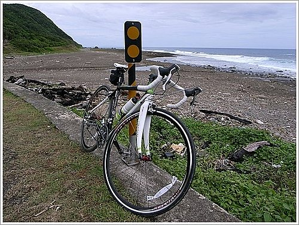

有沒有海角七號的fu啊？
第一次遠征、第一次跟車隊出遊、第一次走海岸線，這趟行程對我而言有好多的第一次啊，不僅如此，後面還遇到第一次雨中飆車、第一次騎到抽筋、第一次公路車off road‧‧‧
 | 接續前篇，離開旭海社區沒幾分鐘，道路轉個彎，就開始靠著海岸而行了。 |
↑映入眼簾的是一望無際的太平洋以及鋪展開來的碎石灘，粗曠原始的自然美，讓人忍不住驚呼讚嘆。
↑雖然可惜不是期待中的碧海藍天，但實際上如果真的出太陽，這一長段完全沒有樹蔭的路，可能騎完會變人乾吧XD
↑沿路會經過不少廢棄的管制哨。
 | 一邊是山一邊是海，騎起來真是心曠神怡。 |
 | 總算遇到有人的小警局，此地進入滿洲鄉的港仔村。 |
↑港仔漁港，有種與世無爭的氛圍。
↑周末可能沒有捕魚，小巧的港灣停滿漁船，卻是異常安靜。
 | 又是集合休息。 |
 | 壓陣車隊也隨後到達。 |
↑大夥在涼亭下泡茶賞景。
↑前方不遠處就是有名的九棚〈港仔〉大沙漠。
 | 附近就有出租沙灘車的店家。 |
離開港仔就結束我們的海岸路段，享受美景完畢又要開始上山，而這段上山的路線正是苦難的開始，因為不但是一路不停的上坡，還下起雨來了，更糟糕的是，
我竟然忘記帶雨衣，本來以為一下下就會停，沒想到還越下越大，很快我就全身像泡在水裡一樣，鞋子更是裝滿滿的，唯一沒淋到雨的就是被專用防風眼鏡包覆的地方，很慘，真的很慘~
我看到前方同樣沒穿雨衣的隊友獨自在雨中等人，彼此商量過後打算原地等待保母車過來接應，沒等還好，這一停留體溫快速散失，我倆深感不對，當下決定要繼續衝刺才能產生熱量，就這樣一路撐到用中餐的地點：紫灣VILLA〈以前叫翡翠山林度假村〉。
↑到達紫灣我們馬上更換上乾衣，山區溫度比較低，得小心別著涼感冒，還好行程包含泡溫泉，當初就有多準備一套衣褲，正好派上用場。
 | 趁著用餐的時刻把濕衣晾起來，因為還有可能要繼續騎啊。 |
 | 其他隊友即使有穿雨衣也難逃溼答答的命運，車子上紛紛掛起車衣車褲，如萬國旗般十分狼狽，倒是後面晚出發幾位押車的，直接上保母車逃過一劫。 |
 | 度假村的狗狗很友善。 |
↑接待櫃台及大廳。
↑午餐由滿洲鄉在地的友人尤老師熱心接待，準備了熱呼呼的刈菜雞湯、便當、水果以及茶點，讓大家得到充分的休息及補給。
↑用完餐雨剛好也停了，大夥豪氣干雲二話不說，穿著半乾的衣服繼續騎完全程。
↑然而我們此時又面臨了另一個狀況：
柏油路面毀壞，大概這段回去牡丹水庫的路徑屬於產業道路，修復的狀況不佳，好幾個地方都是碎石子凹凸不平水窪處處，顛頗的程度直可比擬off road，這對我騎的公路車而言是個殘酷的考驗，每每遇到只能放慢速度，甚至下來抬車。
這就要質疑一下前一篇提到的準則：只要是公路都可以騎公路車-
嗎，我想在台灣並不很適用，尤其在逢雨必坍方的山區，難怪大多數車友還是選擇登山車上山。
最後一個難關是本路線的最高點：海拔400公尺的
高士佛山，陡峭的斜坡考驗著大家的腿力，老實說大不了牽車用走的，可是我是很想試試看自己能到甚麼程度，終於在某個上坡肌力不支發生小腿抽筋，發生的瞬間我有意識到，馬上跳下車就解除了，還好沒有大礙。
↑匆匆一瞥的石板屋遺址。過了最高點後，就一路御風而下，此時天色也漸漸暗了，路過的景色也無心細看。
↑掌聲鼓勵“淑女車”抵達終點~
 | 不忍愛車飽受泥濘摧殘，馬上給它簡單沖洗一番。 |
↑然後泡個舒爽的溫泉，洗去一整天的疲憊，四重溪的溫泉清澈透明無色無味，觸感滑溜滑溜的，泡久皮膚也不會乾澀，在日治時代它可是與北投、陽明山和關子嶺並稱台灣四大溫泉哩。
↑最後以豐盛的晚餐作為ending，還外加宗哥提供的慶功紅酒助興，或許是體力消耗後的效果吧，感覺胃口大開甚麼食物都變的美味起來。
跟車隊出遊一整天，要感謝老婆大人的支持，願意獨自在家照顧兩小，也感謝她同事們一路提攜扶持，每每都有熱心的隊友騎到一旁關懷詢問，這對一個剛入門的菜鳥而言，是很有鼓舞作用的，難怪我會一步步接受他們的
蠱惑感召，對單車活動越陷越深。
附上GPS軌跡記錄器記載的路線圖跟資料：